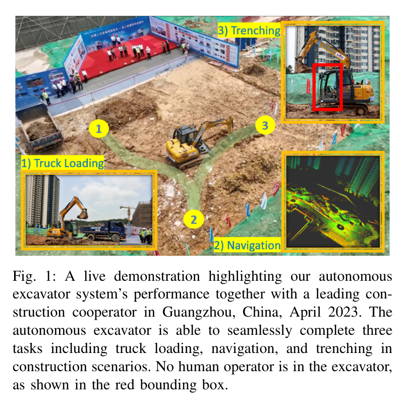
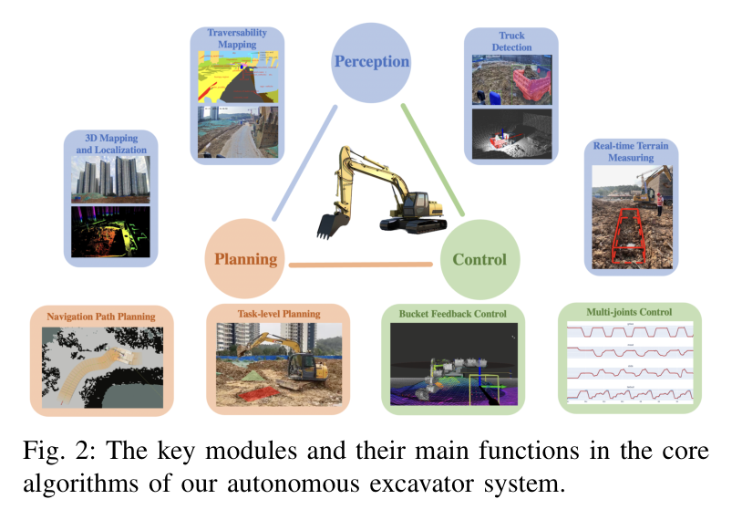
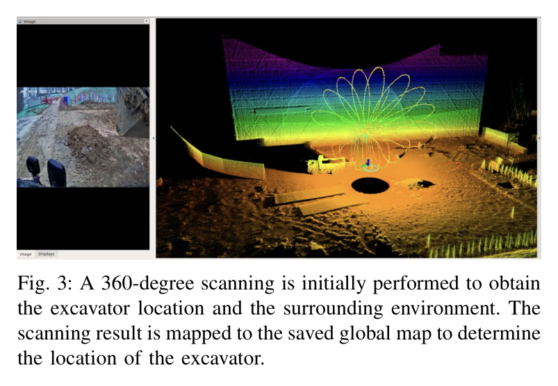
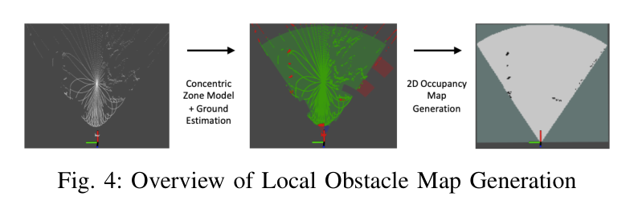
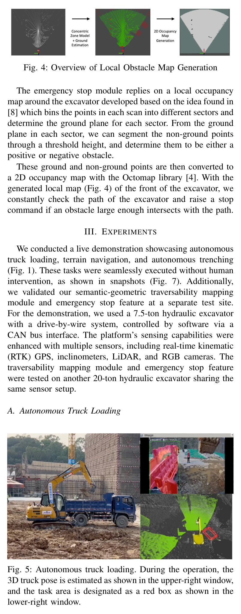
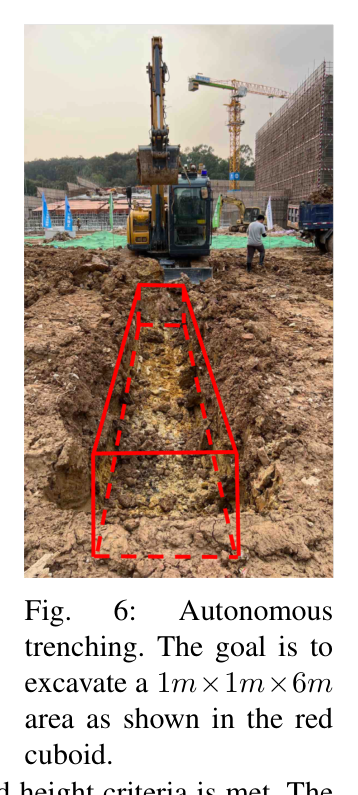
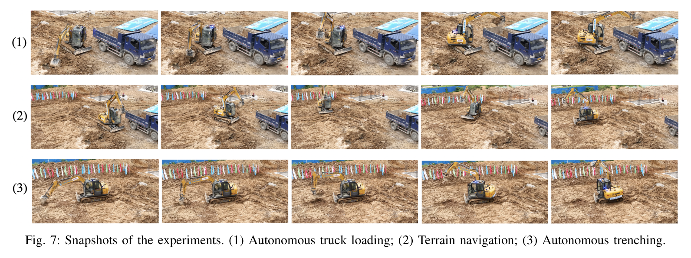
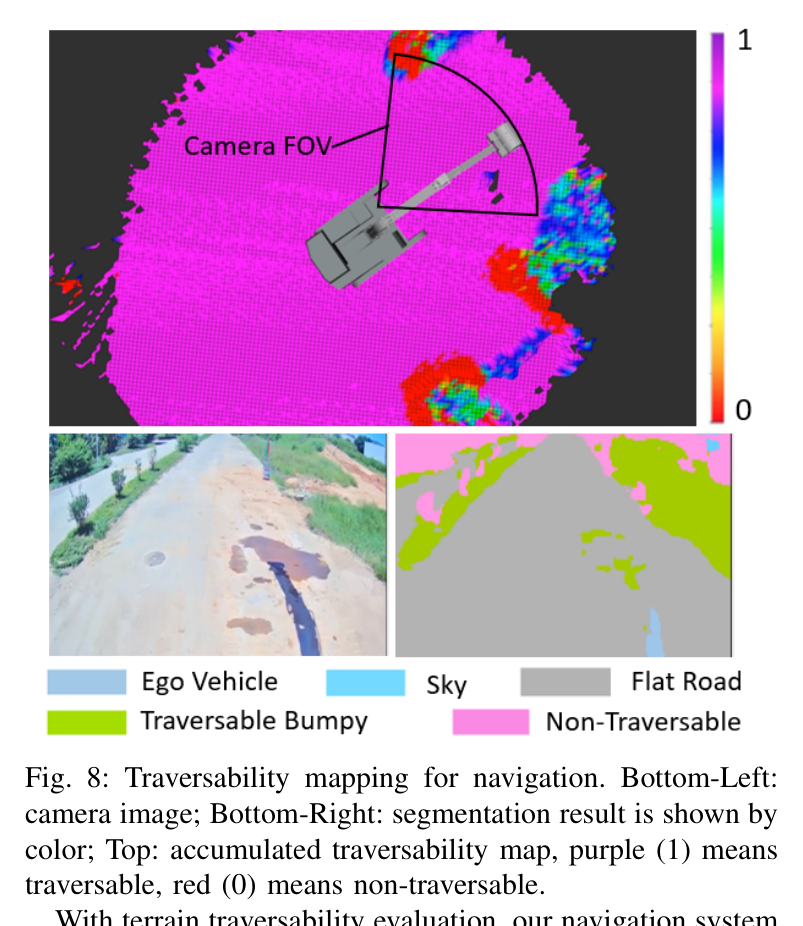
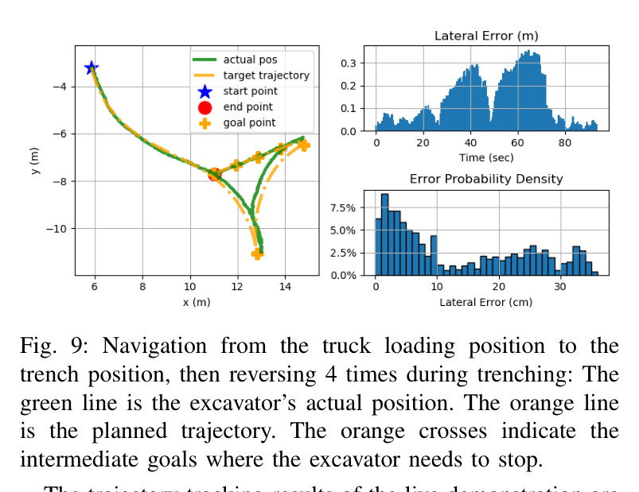

한줄 요약 — 건설 자동화용 AES는 트럭 3D 자세·실시간 고도 및 주행성 지도에서 상차와 트렌칭 작업을 분해하고, 주행과 팔 동작을 순차 실행한다. 트렌치 깊이오차 0.020±0.101m, 주행오차 0.35m 미만을 보였으며, 경로 장애물에는 재계획 대신 독립 비상정지 계층이 대응한다.
1.연구 배경 및 동기
상차·험지 주행·트렌칭을 한 대의 굴착기로 연속 자동화
건설 토공은 도로·교량·건축물 시공의 기반이지만 반복 작업, 거친 지형, 대형 장비 간 충돌 위험 때문에 숙련자 의존성과 안전 부담이 크다. 기존 Baidu AES는 재료 상차를 중심으로 인지·계획·제어를 통합했으나, 실제 건설 공정에서는 굴착기가 적재 지점에서 작업 지점으로 스스로 이동하고 서로 다른 목표 형상을 연속 처리해야 한다. 이 논문은 단일 기능의 자동화가 아니라 truck loading, terrain navigation, trenching을 하나의 응용 계층 아래 잇는 다중작업 시스템을 목표로 한다.
2023년 4월 중국 광저우의 건설 협력사 현장에서 7.5톤 굴착기가 사람 탑승 없이 세 작업을 연속 수행했다. 시연 구역은 다른 차량과 작업자가 배제된 통제 환경이었고 당시 주행 중 장애물을 능동 감시하지 않았다. 저자들은 이 한계를 명시하고, 이후 경로 전방의 국소 점유지도를 감시해 충돌 가능 시 계획기와 제어기를 즉시 중단하는 독립 비상정지 모듈을 20톤 장비에서 추가 검증했다.

원문 Figure 1 · PDF p.1 — Fig. 1: A live demonstration highlighting our autonomous excavator system’s performance together with a leading con- struction cooperator in Guangzhou, China, April 2023. The autonomous excavator is able to seamlessly complete three tasks including truck loading, navigation, and trenching in construction scenarios. No human operator is in the excavator, as shown in the red bounding box.

원문 Figure 2 · PDF p.2 — Fig. 2: The key modules and their main functions in the core algorithms of our autonomous excavator system.
선행 연구의 한계
기존 자율굴착 시스템은 상차나 단일 굴착 작업에 집중해 서로 다른 토공 작업과 장비 이동을 연속 연결하지 못했다.
비정형 현장에서는 차선이 없고 지면 형상이 계속 바뀌므로 고정 지도나 단순 장애물 회피만으로 안전한 주행 영역을 판단하기 어렵다.
유압 관절은 상호 결합되어 단일 관절 오차가 버킷 위치 오차로 누적되며 정밀 작업 품질을 제한한다.
초기 공개 시연은 통제 구역에서 수행되어 작업자·차량 같은 동적 장애물을 실시간 회피하는 기능을 증명하지 못했다.
이 연구의 기여
LiDAR·RGB·RTK와 관절 센서를 이용한 위치추정, 트럭 자세추정, 지형 측정, 주행성 지도를 상차·트렌칭·주행에 공통으로 제공하는 인지 계층을 구성했다.
고수준 작업계획, Material Removal과 Base Move 하위계획, 실행 가능한 팔·차체 motion primitive로 이어지는 계층형 계획·제어 구조를 다중작업에 적용했다.
7.5톤 실차가 truck loading, terrain navigation, trenching을 사람 개입 없이 연속 수행한 공개 시연과 작업별 정량 결과를 제시했다.
경로 전방의 양·음 장애물을 국소 점유지도에서 검출해 독립적으로 정지시키는 안전 계층을 20톤 굴착기에 추가했다.
2.방법론 및 시스템 구성
시스템은 perception, planning, control의 세 핵심 모듈과 작업별 설정을 조정하는 application layer로 구성된다. 인지는 저장된 전역 점군지도와 현재 LiDAR 스캔을 정합해 굴착기 위치를 구하고, RGB 검출 결과에 해당하는 LiDAR 점군으로 덤프트럭의 3D 자세를 추정한다. LiDAR 고도지도는 굴착영역의 현재 높이와 굴착점 선택에 쓰이며, RGB 의미와 지형 기하를 결합한 주행성 지도는 차체 경로계획의 비용 지도가 된다.
계획은 작업을 차체 이동과 팔 굴착의 교대 시퀀스로 분해한다. 고수준 계획기가 정차 위치와 굴착 하위영역을 정하고, Material Removal planner가 지역별 굴착점을 갱신하며, Base Move planner가 Hybrid A*로 목표 위치까지 경로를 만든다. 제어기는 CAN bus를 통해 유압 관절과 궤도 명령을 실행한다. 별도 emergency stop은 계획 경로를 따라 전방 국소지도를 지속 검사하되 장애물 회피나 재계획을 하지 않고 위험 시 계획기·제어기를 종료한다.
처리 파이프라인
1
360도 초기 스캔과 전역지도 정합
작업 시작 시 주변을 360도로 스캔하고 저장된 전역 점군지도에 현재 LiDAR를 정합해 굴착기 위치를 초기화한다. RTK와 관절 센서는 위치·자세 및 작업기 형상을 보조한다.
2
트럭·지형·주행성 인지
RGB 영상으로 덤프트럭을 빠르게 검출하고 대응 LiDAR 점군으로 3D 자세와 덤핑 위치를 구한다. 동시에 LiDAR 고도지도와 RGB-LiDAR 의미·기하 융합으로 굴착영역 및 주행성 정보를 갱신한다.
3
고수준 작업 분해
상차는 굴착영역과 트럭 덤핑영역을, 트렌칭은 긴 목표 체적을 중첩된 작은 하위영역으로 나눈다. 각 하위영역이 목표 높이에 도달할 때까지 dig-and-dump를 반복하고 다음 영역으로 이동한다.
4
Hybrid A* 차체 경로
주행성 지도를 비용으로 사용하고 궤적 곡률을 제한해 연약지반에서 급선회로 장비가 빠지는 위험을 줄인다. 계획된 경로는 횡방향 추종과 종방향 속도 제어로 실행한다.
5
팔 motion primitive와 유압 제어
계층형 계획기가 선택한 굴착점·덤핑 위치를 feasible arm motion으로 변환하고 다관절 제어기가 CAN bus를 통해 boom·stick·bucket·swing을 추종한다.
6
독립 비상정지 감시
LiDAR 스캔을 sector로 나눠 지면을 추정하고 높이 임계값으로 양·음 장애물을 분리한다. OctoMap 기반 2D 국소 점유지도에서 충분히 큰 장애물이 계획 경로와 교차하면 즉시 정지 명령을 낸다.
원문 수식과 의미

원문 Figure 3 · PDF p.2 — Fig. 3: A 360-degree scanning is initially performed to obtain the excavator location and the surrounding environment. The scanning result is mapped to the saved global map to determine the location of the excavator.

원문 Figure 4 · PDF p.3 — Fig. 4: Overview of Local Obstacle Map Generation
3.핵심 기술
공유 멀티모달 인지 계층
3D LiDAR와 2D RGB 카메라를 공통 센서 기반으로 삼아 위치추정, 트럭 자세, 지형 높이, 주행성이라는 서로 다른 작업 정보를 생산한다. 저장 전역지도 정합은 현장 좌표계에서 차체를 놓고, 트럭 검출과 3D 자세는 덤핑 충돌을 피하는 기준을 제공하며, 고도지도는 매 굴착 뒤 변한 토사를 다음 계획에 반영한다.
전역 점군지도와 현재 LiDAR 스캔 정합
RGB 맞춤형 트럭 검출 후 LiDAR 3D 자세추정
실시간 elevation map 기반 굴착점 선택
RGB 의미·LiDAR 기하 기반 traversability map
다층 계층형 작업·동작 계획
계획기는 task planner, sub-task planners, motion primitives의 세 층으로 나뉜다. 긴 트렌치를 한 번에 풀지 않고 굴착기가 도달 가능한 작은 체적으로 분할하고, 지역 완료 후 차체 이동을 삽입한다. 이 구조는 상차처럼 차체가 정지한 반복 작업과 트렌칭처럼 여러 정차 위치를 요구하는 작업을 같은 틀에서 표현한다.
Material Removal Sub-task planner
Base Move Sub-task planner
굴착점·덤핑점과 목표 높이의 반복 갱신
차체와 팔 motion primitive의 순차 실행
장비 제약을 반영한 주행성 기반 Hybrid A*
격자 셀은 최신 점들의 평균 높이, 갱신시각, 경사, 단차, 의미 정보를 저장한다. 장비가 넘을 수 있는 지형 범위를 벗어나면 낮은 주행성 점수를 주고, 허용 범위에서는 기하와 의미 가중치를 조정한다. Hybrid A*는 이 지도를 이용해 단순 최단거리보다 장비가 통과하기 쉬운 경로를 선택하고 곡률을 제한한다.
실시간 elevation grid 갱신
경사·단차·의미의 장비별 임계값
연약지반 급선회 방지를 위한 곡률 제한
횡방향 경로추종과 종방향 속도제어
재계획과 분리된 비상정지 안전 계층
논문의 안전 모듈은 동적 회피기가 아니라 최후의 정지 장치다. sector별 지면에서 비지면 점을 추출해 양·음 장애물로 만들고, 이를 2D 점유지도에 누적한다. 장비 앞 6m×4m 안전영역과 계획 경로가 점유 셀과 겹치면 navigation planner와 controller를 종료한다.
Patchwork++ 아이디어에 기반한 sector 지면분할
OctoMap 기반 국소 점유지도
양·음 장애물 모두 고려
정지 후 우회·복구 로직은 없음
4.실험 결과
실험 환경·장비·데이터
통합 공개 시연은 drive-by-wire 7.5톤 유압굴착기에서 수행했고, RTK GPS, inclinometer, LiDAR, RGB 카메라를 장착해 CAN bus로 제어했다.
주행성 지도와 비상정지는 동일 센서 구성을 가진 별도의 20톤 굴착기에서도 시험했다.
작업은 2m×3m×1m 상차 굴착 박스, 1m×1m×6m 트렌치, 상차 위치에서 트렌치 위치까지의 비정형 지형 주행으로 구성됐다.
비상정지는 정지 휠로더와 크기가 다른 물체를 계획 경로에 배치해 국소지도 검출과 실제 정지를 확인했다.
실험 프로토콜
상차에서 굴착영역은 굴착기 기준 45도 방향의 2m×3m×1m 박스로 정의하고, 덤핑영역은 추정한 트럭 3D 자세와 형상으로 결정했다.
트렌치는 1m×1m×2m 하위작업 5개로 나누고 인접 구간을 1m 중첩했다. 각 구간은 목표 높이까지 dig-and-dump를 반복한 뒤 차체가 다음 위치로 이동했다.
주행은 사용자가 UI로 목표 좌표를 입력하면 Hybrid A*가 경로를 만들고 실제 위치와 계획 경로의 최근접 거리로 lateral tracking error를 계산했다.
비상정지는 장비 중심 기준 전방 6m×4m 영역에 장애물이 들어올 때 정지 명령이 발생하는지 반복 시험했다.
세 작업의 연속 시연은 다른 차량과 작업자가 없는 통제 작업구역에서 수행했다.
비교 기준
외부 자율굴착 시스템과의 직접 정량 비교는 보고하지 않았다.
트럭 상차는 계획 버킷 궤적 대비 축별 RMS 추종오차로 평가했다.
트렌칭은 목표 체적 대비 평균 깊이오차, 하위작업당 굴착 반복, 루프 및 전체 작업시간으로 평가했다.
주행은 계획 경로 대비 lateral tracking error 누적분포로 평가했다.
비상정지는 장애물 크기, 안전영역 진입, 정지거리와 반복 성공 여부를 점검했다.
평가 지표
버킷 x·y·z 축 RMS 추종오차
트렌치 평균 깊이오차와 표준편차
하위작업당 dig-and-dump 횟수 및 루프·전체 소요시간
주행 lateral tracking error의 최대값과 누적 비율
비상정지 안전영역, 장애물 최소 시험 크기, 실제 정지거리

원문 Figure 5 · PDF p.3 — Fig. 5: Autonomous truck loading. During the operation, the 3D truck pose is estimated as shown in the upper-right window, and the task area is designated as a red box as shown in the lower-right window.

원문 Figure 6 · PDF p.3 — Fig. 6: Autonomous trenching. The goal is to excavate a 1m×1m×6m area as shown in the red cuboid.

원문 Figure 7 · PDF p.4 — Fig. 7: Snapshots of the experiments. (1) Autonomous truck loading; (2) Terrain navigation; (3) Autonomous trenching.

원문 Figure 8 · PDF p.4 — Fig. 8: Traversability mapping for navigation. Bottom-Left: camera image; Bottom-Right: segmentation result is shown by color; Top: accumulated traversability map, purple (1) means traversable, red (0) means non-traversable.

원문 Figure 9 · PDF p.4 — Fig. 9: Navigation from the truck loading position to the trench position, then reversing 4 times during trenching: The green line is the excavator’s actual position. The orange line is the planned trajectory. The orange crosses indicate the intermediate goals where the excavator needs to stop.
상차에서는 트럭 자세와 굴착 박스를 인식해 반복 굴착·덤핑을 수행했고, 버킷 RMS 추종오차는 x 0.167m, y 0.135m, z 0.282m였다. 저자들은 이 오차가 유압 관절 간 결합에서 주로 생긴다고 설명하며 작업 완료에는 허용 가능하지만 제어 정밀도 개선 여지가 있다고 평가했다. 논문은 사람 작업자와 생산성을 직접 비교하지 않고 장시간 일관된 실행 가능성만 제시한다.
트렌칭은 1m×1m×6m 목표를 중첩 하위작업으로 처리해 평균 0.020±0.101m 깊이오차를 얻었다. 하위작업 하나에 평균 5회의 dig-and-dump, 한 루프 24.2초가 걸렸고 차체 이동을 포함한 전체 작업은 11.78분이었다. 이는 정차 위치 이동과 팔 작업을 계층형 계획으로 연결한 가장 구체적인 다중작업 결과다.
주행에서는 급선회 연약지반에서 최대 lateral error가 0.35m 미만이었고 전체 시간의 약 90%는 0.3m 미만, 50%는 0.1m 미만이었다. 비상정지 시험에서는 전방 안전영역에 둔 휠로더를 감지해 약 2m를 남기고 정지했고, 지름 0.5m footprint의 물체까지 반복 성공했다고 보고한다. 다만 비상정지는 우회 경로 생성이나 정지 후 자동 재개를 제공하지 않는다.
정량 결과
평가 항목
정량 결과
조건·맥락
원문 근거
상차 굴착영역
2m×3m×1m, 45도
굴착기 기준으로 정의한 작업 박스
PDF p.3
버킷 RMS 추종오차
(0.167, 0.135, 0.282)m
x·y·z 축 상차 작업
PDF p.3
트렌치 목표 체적
1m×1m×6m
1m×1m×2m 하위작업 5개, 인접 1m 중첩
PDF p.3
하위작업 반복
평균 5회
하위작업당 dig-and-dump 루프
PDF p.3
dig-and-dump 시간
24.2초/루프
트렌칭 작업
PDF p.3
전체 트렌칭 시간
11.78분
차체 이동 포함
PDF p.3
트렌치 깊이오차
0.020±0.101m
완료된 트렌치 평균 깊이오차
PDF p.3
최대 주행 추종오차
0.35m 미만
연약지반 급선회 구간
PDF p.4
주행오차 누적비율
0.3m 미만 약 90%, 0.1m 미만 50%
광저우 연속 시연 경로
PDF p.4
비상정지 안전영역
6m×4m
굴착기 전방 직사각형
PDF p.5
장애물 정지거리
약 2m
정지 휠로더를 계획 경로에 배치한 시험
PDF p.5
최소 반복시험 물체 크기
지름 0.5m footprint
다양한 크기 물체 비상정지
PDF p.5
실패 사례와 경계조건
공개 연속 시연 당시 주행 장애물을 능동 감시하지 않아 다른 차량과 작업자를 통제구역에서 배제해야 했다.
급선회와 연약지반에서 lateral tracking error가 가장 커졌다.
유압 관절 결합 때문에 버킷 z축 RMS 오차가 x·y축보다 컸다.
비상정지는 장애물 발견 시 멈출 뿐 동적 객체 예측, 우회 재계획, 정지 후 작업 복구를 수행하지 않는다.
5.한계 및 향후 연구
현재 한계
세 작업 연속 시연은 다른 차량과 사람이 없는 통제 구역이어서 실제 혼재 작업장의 안전성을 입증하지 못했다.
동적 장애물을 추적·예측하거나 충돌을 피하도록 경로를 재계획하지 않고 독립 안전 모듈이 정지만 수행한다.
상차와 트렌칭 제어는 유압 관절 결합으로 축별 버킷 추종오차가 남는다.
7.5톤·20톤 두 장비와 제한된 현장에 한정되어 다른 기종·토질·날씨에서의 일반화가 불명확하다.
작업 생산성, 연료소모, 토량 정확도, 사람 작업자 대비 성능의 체계적 반복 통계가 없다.
향후 연구
작업자와 차량의 궤적을 추정해 감속·우회·재계획하고 정지 후 안전하게 작업을 재개하는 동적 내비게이션을 개발한다.
유압 관절 간 결합과 하중 변화를 반영하는 제어기로 버킷 추종 정확도를 높인다.
파쇄암 굴착과 악천후처럼 더 넓은 토질·환경 조건으로 시스템을 확장한다.
실제 건설 프로젝트에서 장기 반복 운용하며 생산성·신뢰성·안전 개입률을 정량 검증한다.
6.한마디로 정리
핵심 방법은?
LiDAR·RGB·RTK 인지, 고도·주행성 지도, 계층형 작업계획, Hybrid A* 차체 이동, 팔 motion primitive와 독립 비상정지를 단일 AES에 통합했다.
핵심 결과는?
상차·주행·트렌칭을 무인 연속 수행하고 트렌치 깊이오차 0.020±0.101m, 최대 주행오차 0.35m 미만, 약 2m 전 장애물 정지를 보였다.
한계는?
현장은 통제되어 있었고 안전 계층은 회피·재계획 없이 정지만 하므로 동적 혼재 작업장 자율성은 아직 검증되지 않았다.
#시스템통합·현장실증#측위·매핑#작업·궤적계획#안전·HRI#LiDAR 지도 정합#트럭 3D 자세추정#계층형 계획#Hybrid A*#비상정지
나의 의견 / 우리 연구와의 연관성
이 연구는 자율굴착을 팔 궤적 하나가 아니라 현장 좌표계의 작업 시퀀스로 다룬다는 점에서 중요하다. 상차 완료 뒤 트렌치 위치로 이동하고, 긴 굴착 체적을 정차 위치별 하위작업으로 쪼개며, 고도지도로 완료 조건을 갱신하는 구조는 필드로봇이 작업과 이동을 통합해야 하는 전형적인 사례다.
실제 적용에서는 emergency stop을 최종 안전장치로 유지하되, 그 앞단에 사람·차량 검출, 미래 점유 예측, 안전속도 결정, 우회 재계획, 작업 상태 복구가 필요하다. 또한 장비별 track 폭과 선회반경, 토질과 하중에 따른 유압 응답을 계획·제어에 함께 넣어야 제한된 공개 시연에서 지속 운용 시스템으로 발전할 수 있다.
계층형 task–subtask–primitive 구조는 상차·트렌칭·정지 위치 이동을 같은 작업 그래프로 표현한다.
LiDAR 고도지도는 작업 완료 판단과 다음 굴착점 선택을 폐루프로 연결한다.
주행성 기반 Hybrid A*는 최단거리보다 연약지반과 급선회의 장비 위험을 비용에 반영한다.
비상정지는 필수 독립 계층이지만 동적 회피와 정지 후 복구를 대신할 수 없다.
7.전체 그림·표
본문 핵심 위치에 배치하지 않은 원문 Figure와 Table을 원문 페이지 순서로 수록한다.